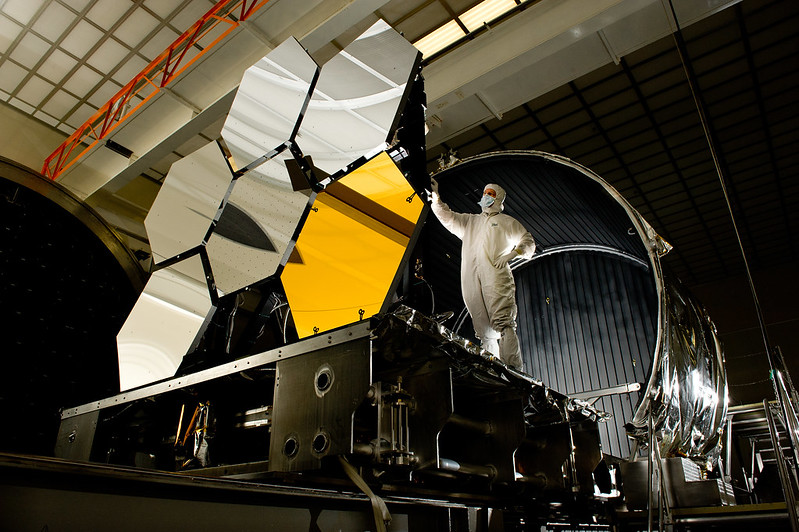
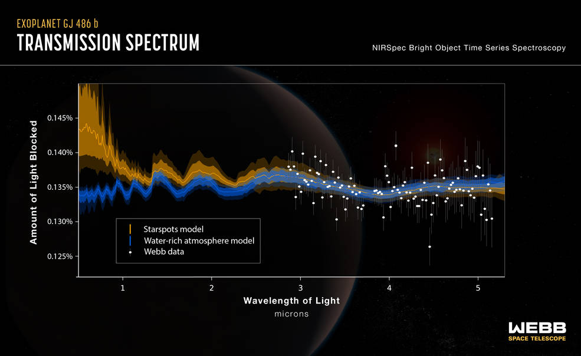

.svg)
What Will Happen if We Find Life on Exoplanets with the James Webb Space Telescope?
What are exoplanets?
source
"Our search for planetary systems circling other stars has a long history" (Exoplanets p.4)
Exoplanets, also known as extrasolar planets, are planets that orbit stars other than our sun. They were first discovered in the early 1990s, and since then, thousands of exoplanets have been detected. Exoplanets come in a variety of sizes and types, ranging from small rocky planets like Earth to gas giants like Jupiter.
The detection of exoplanets is mainly done through two methods: radial velocity and transit photometry. In radial velocity method, astronomers look for wobbling motion of the star that indicates the presence of a planet orbiting it. In transit photometry, astronomers observe the dip in the brightness of a star when a planet passes in front of it. These methods allow astronomers to not only detect exoplanets, but also to estimate their mass, size, and orbital characteristics.
The study of exoplanets has led to a greater understanding of the universe and the prevalence of planets beyond our own solar system. It has also opened up new avenues for research, particularly in the search for life beyond Earth. By studying the characteristics of exoplanets, such as their size, distance from their host star, and the composition of their atmosphere, astronomers are able to determine whether a planet could potentially support life.
Exoplanets have been found in many different environments, from extremely hot planets that orbit very close to their stars, to planets that orbit two or more stars. Some exoplanets even have bizarre and exotic features, such as diamond planets, which are thought to be composed mostly of carbon. The discovery of exoplanets has revolutionized our understanding of the universe and our place in it, and it continues to be an exciting and rapidly advancing field of study.
In addition to radial velocity and transit photometry, there are several other methods that have been developed to detect exoplanets. One such method is gravitational microlensing, which involves observing the bending of light from a distant star due to the gravitational pull of an unseen exoplanet passing in front of it. Another method is direct imaging, which involves directly capturing an image of the exoplanet using a telescope. This method is particularly useful for studying exoplanets that are large and far away from their host star, such as gas giants.
Furthermore, the study of exoplanets has also led to new discoveries about the formation and evolution of planetary systems. For example, the discovery of hot Jupiters, gas giants that orbit their host star at close distances, challenged previous theories of planetary formation and migration. Additionally, the discovery of super-Earths, planets that are larger than Earth but smaller than Neptune, has led to a better understanding of the range of planet sizes that can exist.
As the study of exoplanets continues to advance, there is great potential for new discoveries and breakthroughs. With the launch of new telescopes and technology, astronomers will be able to detect and study even more exoplanets, providing valuable insight into the nature of planetary systems and the potential for life beyond Earth.
The Search for Life Beyond Earth
source
"Known as SETI, for Search for Extraterrestrial Intelligence, it seeks to answer one of the biggest of the big questions of existence: are we alone in the universe?" (Paul Davies on The Eerie Silence p.5)
The search for extraterrestrial life has been a topic of interest for centuries, with the idea that we might not be alone in the universe captivating human imagination. However, it has only been in recent decades that the search for extraterrestrial life has become a serious scientific pursuit. Many missions have been launched to scan our solar system for signs of microbial life, such as the Mars rovers and the Voyager probes. As technology and our understanding of the universe have advanced, the search for life beyond our solar system has become increasingly important.
Despite our advancements in technology, finding life beyond our own solar system remains a challenge. The vast distances between stars and planets make it difficult to detect exoplanets, let alone study their atmospheres for signs of life. Additionally, the techniques we use to search for exoplanets often depend on the planets passing in front of their stars, blocking a small fraction of the star's light. This method, called the transit method, requires careful timing and positioning of the telescope, and it limits the type of exoplanets we can study. Fortunately, with the James Webb Space Telescope, we will have a powerful tool to study exoplanet atmospheres and search for chemical signatures that may indicate the presence of life. The telescope's large mirror and advanced instruments will allow us to observe exoplanets in greater detail than ever before. In the coming years, we may finally discover that we are not alone in the universe and find clues to how life has evolved in other corners of the cosmos. For example, this graph shows what the JWST has captured in its journey so far. It found water vapor on an exoplanet using its powerful tools.
 sourceThe James Webb Space Telescope (JWST) was launched in December 2021, and has already started to transform our understanding of the universe. Click here to read a review about Dr. Alex Lockwood's TEDxKC Talk "The James Webb Space Telescope: Think Bigger. One of its main goals is to study the atmospheres of exoplanets in detail, using its advanced instruments to detect the chemical signatures of molecules like water vapor, carbon dioxide, and methane. Another interesting gas is phosphine gas which “is a gas that is associated with life on earth.” (David Grinspoon on Cosmic Queries) While the JWST has not yet found evidence of extraterrestrial life, its observations are helping to pave the way for future discoveries and expanding our knowledge of the possibilities for life beyond our own solar system.
How to Find Life Beyond Earth

source
One of the most promising ways to find life beyond Earth is to search for signs of life in exoplanet atmospheres. This is done using spectroscopy, which involves breaking down the light from a star into its component wavelengths and looking for patterns that indicate the presence of certain molecules. For example, if we see an excess of oxygen in an exoplanet's atmosphere, it could be a sign of photosynthesis occurring on the planet's surface.
Another way to find life is to search for biosignatures in rocks or other geological features. For example, if we find certain patterns of carbon isotopes in a rock sample, it could indicate that the carbon was produced by living organisms. Similarly, the presence of certain minerals or structures, such as stromatolites, could be a sign of past or present microbial life.
Direct imaging is another method for finding life beyond Earth. This involves taking images of exoplanets and looking for features that could be signs of life, such as vegetation or artificial structures. Click here to see what those images could look like However, this method is currently limited by the sensitivity of our telescopes and the challenges of distinguishing between natural and artificial features.
In addition to these methods, we can also search for radio signals or other forms of communication from intelligent extraterrestrial life. This approach, known as SETI (Search for Extraterrestrial Intelligence), involves scanning the sky for patterns of radio waves or other signals that could be indicative of intelligent life. However, so far, we have not detected any confirmed signals from extraterrestrial civilizations.
Whenever we do find biosignatures for life, scientists designed a protocol which they can use to tell others what the likelihood of life is. “Their idea is to use a scale, from level 1 to level 7, that will allow confidence in any given case to be gradually increased. Known as the “confidence of life detection,” or CoLD, scale, it calls initially for simple confirmation that a result is not linked to contamination or some obviously abiotic origin, whereas its final levels would represent robust follow-up observations solidifying a link to life.” (Scientific American) This would make it so that information about finding life does not falsely spread. Since now that social media is readily available, it could very much happen whenever a small breakthrough happens so this restricts that case.
The Implications of Finding Life
source
The discovery of extraterrestrial life would be a monumental achievement for humanity, as it would confirm that life is not unique to Earth and potentially open up a vast array of new possibilities for exploration and discovery. Click here to see other sources on the JWST. According to astrobiologist David Grinspoon, the discovery of life beyond our planet would be "one of the most important discoveries in human history," as it would fundamentally change our understanding of the universe and our place in it. It would also raise many important questions about the nature of life, its origins, and its distribution in the universe.
The discovery of even simple microbial life on another planet would have profound philosophical and theological implications. It would challenge our anthropocentric view of the cosmos and raise questions about the nature of life and its place in the universe. As David Grinspoon points out, "the discovery of life on another planet would be a profound philosophical and cultural shift, forcing us to rethink our place in the cosmos and our relationship to the rest of the universe." This change would really make us rethink a lot of practices that we do right now. “The detection and further study of extra-terrestrial life will fundamentally challenge our view of nature, including ourselves, and therefore the field of astrobiology can hardly be isolated from its societal context, including philosophical, ethical and theological perspectives.” (The Royal Society's report)
The discovery of extraterrestrial life also raises important ethical considerations. For example, if we were to make contact with intelligent extraterrestrial life, we would need to consider our responsibility to communicate with them in a way that respects their autonomy and intelligence. As David Grinspoon notes, "we would need to think carefully about how we would interact with another intelligent species, especially if they have a completely different set of senses, ways of thinking, and technologies." Ultimately, the discovery of extraterrestrial life would require us to grapple with some of the most profound questions about the nature of life, intelligence, and our place in the universe.
The discovery of extraterrestrial life would also have practical implications, as it would inspire new space exploration missions to search for more advanced forms of life. Scientists would seek to learn as much as possible about the biology and chemistry of extraterrestrial organisms, as well as their habitats and ecosystems. This could lead to the development of new technologies and scientific breakthroughs that could benefit humanity in countless ways.
Conclusion
With the launch of the James Webb Space Telescope, the search for extraterrestrial life has entered a new phase. While the JWST has already made many discoveries, it still holds great potential for detecting signs of life on exoplanets. “The potential for us to actually have some sort of interesting life-detection event on another world is becoming greater.” (Scientific American) The discovery of even simple microbial life on another planet would be a groundbreaking and significant achievement, with far-reaching implications for our understanding of the universe and our place in it. It would challenge our anthropocentric view of the cosmos and inspire new space exploration missions to search for more advanced forms of life. Ultimately, exploring and understanding the universe beyond our own planet is crucial to our continued growth and advancement as a species. As David Grinspoon, a leading astrobiologist, has said, "the search for life elsewhere is the greatest adventure of our time."
References
SUMMERS, MICHAEL. Exoplanets: Diamond Worlds, Super Earths, Pulsar Planets, and the New Search for Life beyond Our ... Solar System. SMITHSONIAN Books, 2018.
Davies, Paul. The Eerie Silence Searching for Ourselves in the Universe. Penguin Books, 2011.
“Cosmic Queries - Life on Venus - Startalk Radio.” StarTalk Radio Show by Neil DeGrasse Tyson, 21 Sept. 2020, https://startalkmedia.com/show/cosmic-queries-life-on-venus/.
O'Callaghan, Jonathan. “How Scientists Could Tell the World If They Find Alien Life.” Scientific American, Scientific American, 10 Nov. 2021, https://www.scientificamerican.com/article/how-scientists-could-tell-the-world-if-they-find-alien-life/.
The Detection of Extra-Terrestrial Life and the Consequences for ... https://royalsocietypublishing.org/doi/10.1098/rsta.2010.0236.
Explore More:

NASA's James Webb Space Telescope website

The Hubble Space Telescope website

The Spitzer Space Telescope website

The Chandra X-ray Observatory website

The European Southern Observatory (ESO) website

The Astrophysical Journal Letters

The Space Telescope Science Institute website

The American Astronomical Society website

The Royal Astronomical Society website

The National Radio Astronomy Observatory website